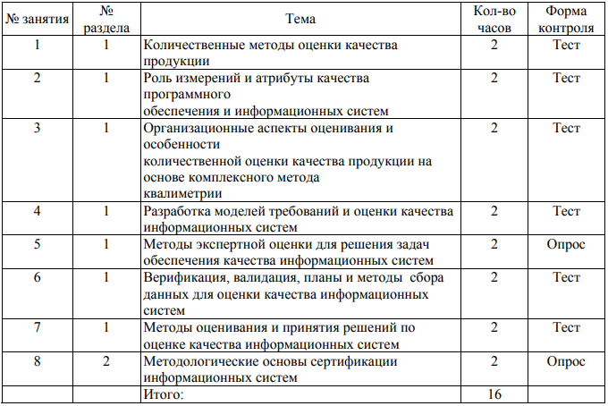

Обеспечение качества информационных систем
Преподаватель: Поляков С.Д.
Основная цель освоения дисциплины: изучение студентами основных методов и технологий обеспечения качества в жизненном цикле информационных систем, процессов ЖЦ и систем менеджмента качества организаций разработчиков ИС, а также формирование практических навыков обеспечения качества в ЖЦ ИС, сертификации программной продукции.
Предусмотренные виды контроля: текущий контроль успеваемости в форме работы на семинарах, письменного тестирования, промежуточная аттестация в форме зачета.
Общая трудоемкость освоения дисциплины: 3 зачетных единицы, 108 часов.
Курс лекций по дисциплине
Курс семинаров по дисциплине
План практических занятий
